<!-- OVERWORLD ART PROBE — 2026-08-03. Plates rendered by tools/ow_probe/. -->
<meta charset="utf-8"><title>ow-valley — the art probe</title>
<style>
 :root{--bg:#12141a;--fg:#e8e6e1;--dim:#9aa0aa;--line:#2a2e38;--up:#7fd18c;--dn:#e0806e;--acc:#d9a441}
 *{box-sizing:border-box}
 body{margin:0;background:var(--bg);color:var(--fg);font:15px/1.55 -apple-system,BlinkMacSystemFont,"Segoe UI",sans-serif}
 header{padding:28px 32px 20px;border-bottom:1px solid var(--line);max-width:1500px;margin:0 auto}
 h1{margin:0 0 6px;font-size:26px;letter-spacing:-.01em}
 .sub{color:var(--dim);max-width:82ch}
 main{max-width:1500px;margin:0 auto;padding:0 32px 90px}
 .bands{margin:22px 0 0;padding:16px 18px;border:1px solid var(--line);border-radius:8px;background:#171a21}
 .bands pre{margin:0;white-space:pre-wrap;font:12.5px/1.5 ui-monospace,SFMono-Regular,Menlo,monospace;color:#c9cdd6;overflow-x:auto}
 h2.sec{margin:52px 0 4px;font-size:22px;padding-top:26px;border-top:1px solid var(--line)}
 h3{margin:30px 0 2px;font-size:18px}
 h3 .tag{font-size:11px;letter-spacing:.08em;text-transform:uppercase;color:var(--acc);border:1px solid var(--acc);border-radius:3px;padding:2px 6px;margin-left:10px;vertical-align:2px}
 .desc{color:var(--dim);font-size:13.5px;max-width:94ch;margin:0 0 14px}
 .row{display:grid;grid-template-columns:repeat(4,1fr);gap:12px;margin:14px 0 0}
 .row.w3{grid-template-columns:repeat(3,1fr)}
 .pane{min-width:0;margin:0}
 .pane figcaption{font:12px/1.4 ui-monospace,Menlo,monospace;color:var(--dim);padding:7px 2px}
 .pane img{width:100%;height:auto;display:block;border-radius:5px;background:#000;border:1px solid var(--line)}
 .pane.is-before img{border-color:var(--dn)}
 .pane.is-before figcaption{color:var(--dn)}
 .why{margin:14px 0 0;padding:12px 14px;background:#171a21;border-left:3px solid var(--line);border-radius:0 6px 6px 0;font-size:13.5px;color:#c4c9d2;max-width:100ch}
 .why b{color:var(--fg)}
 table.sum{width:100%;border-collapse:collapse;margin:22px 0 10px;font:13px/1.45 ui-monospace,Menlo,monospace}
 table.sum th,table.sum td{padding:6px 9px;border-bottom:1px solid var(--line);text-align:left;vertical-align:top}
 table.sum th{color:var(--dim);font-weight:600}
 table.sum td.n{text-align:right;white-space:nowrap}
 .rank{counter-reset:r;list-style:none;padding:0;margin:18px 0 0;max-width:100ch}
 .rank li{counter-increment:r;position:relative;padding:12px 0 12px 46px;border-bottom:1px solid var(--line)}
 .rank li::before{content:counter(r);position:absolute;left:0;top:11px;width:30px;height:30px;line-height:30px;text-align:center;
   border:1px solid var(--acc);color:var(--acc);border-radius:50%;font:13px ui-monospace,Menlo,monospace}
 .rank b{display:block;font-size:15.5px;margin-bottom:3px}
 .rank span{color:var(--dim);font-size:13.5px}
 .note{color:var(--dim);font-size:13px;max-width:96ch}
 mark{background:none;color:var(--acc)}
 @media (max-width:1100px){.row,.row.w3{grid-template-columns:repeat(2,1fr)}}
 @media (max-width:640px){.row,.row.w3{grid-template-columns:1fr}}
 @media (prefers-color-scheme:light){:root{--bg:#faf9f7;--fg:#1a1d23;--dim:#5c626c;--line:#e0dfdb;--up:#1f7a37;--dn:#a8331b;--acc:#9a6b12}
  .bands,.why{background:#f1efec}}
 :root[data-theme="light"]{--bg:#faf9f7;--fg:#1a1d23;--dim:#5c626c;--line:#e0dfdb;--up:#1f7a37;--dn:#a8331b;--acc:#9a6b12}
 :root[data-theme="light"] .bands,:root[data-theme="light"] .why{background:#f1efec}
 :root[data-theme="dark"]{--bg:#12141a;--fg:#e8e6e1;--dim:#9aa0aa;--line:#2a2e38;--up:#7fd18c;--dn:#e0806e;--acc:#d9a441}
 :root[data-theme="dark"] .bands,:root[data-theme="dark"] .why{background:#171a21}
</style>

<header>
<h1>ow&#8209;valley &mdash; the art probe</h1>
<p class="sub"><strong>Nothing here ships and nothing here is a decision.</strong> The light was fixed last night
(<code>69eadd3</code>) and is not reopened. What follows is the corridor <em>as it stands</em>, its weakest points ranked,
and three genuinely different directions for each of the top two &mdash; rendered from the same cameras so a look can
be picked by eye. Every candidate was injected into the live runtime over CDP; the shipped bundle was never touched.
<mark>Pick one per section, or reject the lot.</mark></p>
</header>

<main>

<h2 class="sec">What is actually there</h2>
<p class="desc">Four frames of the walked corridor, at the shipped follow camera (boom&nbsp;40, pitch&nbsp;0.61) and at
walking closeness (boom&nbsp;12&ndash;16). These are the &ldquo;before&rdquo; in every comparison below.</p>
<div class="row">
 <figure class="pane is-before">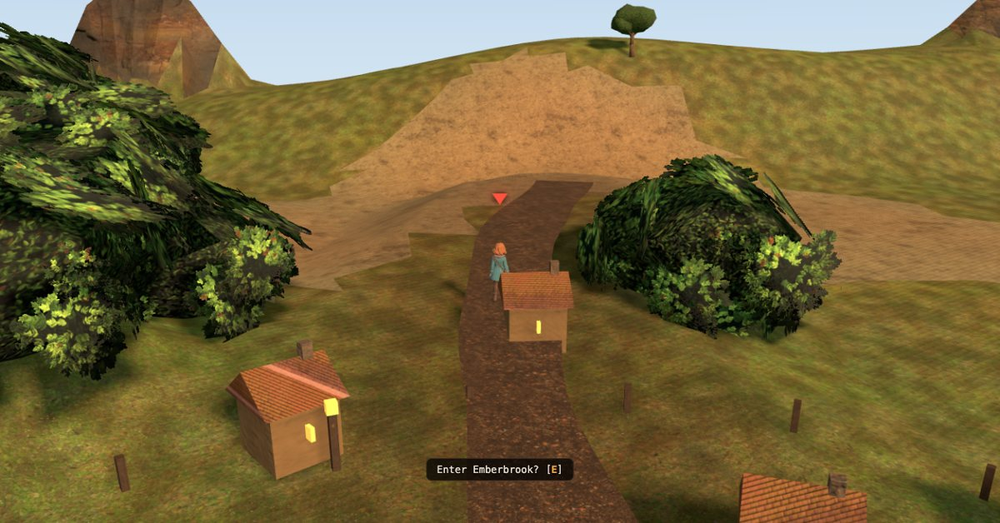<figcaption>EMBERBROOK GATE &middot; boom 16 &middot; (&minus;57,66)</figcaption></figure>
 <figure class="pane is-before">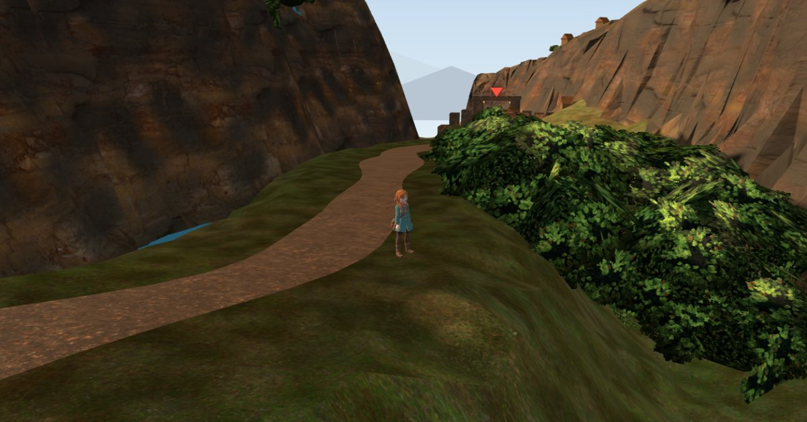<figcaption>GORGE SHELF &middot; boom 12 &middot; (&minus;3,&minus;3)</figcaption></figure>
 <figure class="pane is-before">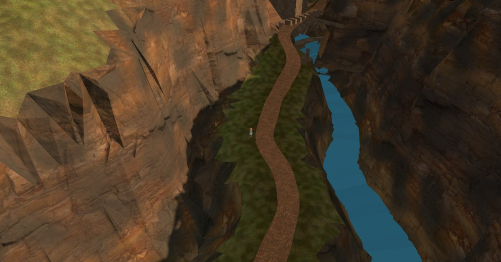<figcaption>GORGE SHELF &middot; boom 40 (SHIPPED) &middot; (&minus;22,11)</figcaption></figure>
 <figure class="pane is-before">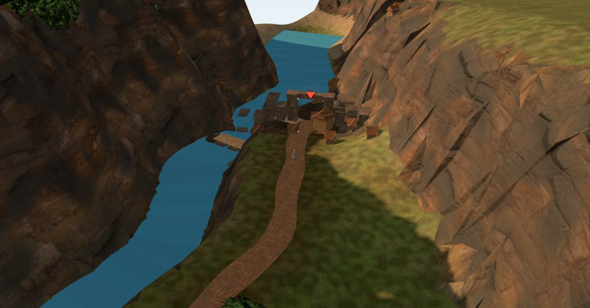<figcaption>DELLHOLLOW APPROACH &middot; boom 40 &middot; (36,&minus;29)</figcaption></figure>
</div>

<div class="bands"><pre>THE MEASUREMENT THAT SET THE PRIORITIES (2026-08-03, ow-probe lane).

Instrument: a triangle census in the LIVE scene graph. For each of seven points on the
road the player actually walks, count the triangles of every dressing batch whose
centroid falls within 15 m. Not a guess about emptiness — a count.

  batch                      tris    within 15 m of road sample 0..6
  veg_field                 38740    0  0  0  0  0  0  0
  tree_field_trunks          9792    0  0  0  0  0  0  0
  props_valley_1+2            956    0  0 36  0  0  0 20
  veg_canopy_whisperwood     7312  295 560  0  0  0  0  0
  veg_canopy_pocket-grove     550    0  0  0  0 255 251  0
  veg_canopy_farwall-crown   4570    0  0  0  0  0  0  0

  Sample 0 = Emberbrook gate.  6 = Dellhollow gate.  Samples 2,3,6 are the gorge shelf,
  which is the MIDDLE THIRD of the walk.

READ IT LIKE THIS. The region owns 38,740 triangles of meadow scatter and 9,792 of tree
trunks, and NOT ONE of them is within 15 m of the road. The whole prop budget near the
walk is ~56 triangles — about three small boxes over a 200 m journey. Two canopy stands
touch the corridor at its two ends and nothing touches its middle.

THE CORRIDOR IS NOT UNDER-LIT AND IT IS NOT UNDER-MODELLED. IT IS UNDRESSED, and the
dressing that exists was placed everywhere except where the player walks.

Second instrument, the whole-region inventory: 54 meshes for 280 x 200 u. `ground_valley`
is three batches; `water_river` is 336 triangles for ~180 m of river; `props_valley_2`
is 944 triangles for a 199 x 109 u footprint.</pre></div>

<h2 class="sec">The five weakest things, in order</h2>
<ol class="rank">
<li><b>The corridor is undressed &mdash; the ground has nothing standing on it</b>
<span>Measured above: zero vegetation triangles and ~56 prop triangles within 15 m of the road, across
the entire walk. In <em>GORGE SHELF &middot; boom 40</em> the player is a twelve&#8209;pixel figure on a bare
green shelf: no wayside stone, no signpost, no scrub, no fallen rock, nothing at any scale between
the 1.7&nbsp;m body and the 60&nbsp;m cliff. This is why the frames read as blockout however good the
light is, and it is the reason ranked first because it is the largest, cheapest, most reversible fix.</span></li>

<li><b>The ground surface is a tinted wash with no scale cue</b>
<span>At walking closeness (<em>GORGE SHELF &middot; boom 12</em>) the grass is a low&#8209;frequency olive
mottle with smeared streaks &mdash; no tufts, no clover, no pebbles, no wear. It answers the question you
have asked twice: <strong>yes, at walking distance the ground reads as a flat tinted plane.</strong> The
zone boundaries make it worse: grass&#8594;sand and grass&#8594;road are hard polygon cuts with no blend, so
the sand plateau behind Emberbrook still reads as a paint splotch &mdash; a <em>raised</em> paint splotch
now, which is what last night's light bought, but a splotch.</span></li>

<li><b>The water is an opaque plate</b>
<span>One uniform blue, hard straight edge where it meets rock, a visible tone&#8209;step between river and
reservoir on the Dellhollow approach, no shore, no shallows, no motion. After the light fix this is the
single most obvious &ldquo;sticker&rdquo; left in any frame. It is also the cheapest thing on this list to
change: <code>ow_f2_water</code> is one material and it wears no map.</span></li>

<li><b>The treeline has exactly one silhouette</b>
<span>Every canopy in the region is the same lumpy cauliflower carrying the same high&#8209;frequency
yellow&#8209;green speckle; no conifers, no dead snags, no crown&#8209;height variance that survives to
40&nbsp;m, and trunks are invisible at every distance the player sees. Whisperwood reads as one
continuous mass rather than a wood you could walk into.</span></li>

<li><b>The town seams have no threshold, and the cottages are the wrong size</b>
<span>At the Emberbrook gate the player gets a text prompt and no gate: two bare stakes, and the road
dissolves into the plateau tan. The impression cottages next to Vesper have their roof ridge at roughly
1.3&times; her height &mdash; a dwelling should be 2.5&ndash;3&times;. They read as sheds, which quietly makes
the whole valley feel like a model railway. (Not built for this probe; flagged because it is cheap to
verify and cheap to fix &mdash; one scale factor on the impression.)</span></li>
</ol>

<h2 class="sec">Section A &mdash; the ground and the wayside <span style="font:13px ui-monospace,Menlo,monospace;color:var(--dim)">(weakest items 1 + 2)</span></h2>
<p class="desc">Three directions, not three settings of one direction: detail from <strong>plants</strong>, detail from
<strong>human use</strong>, detail from <strong>geology</strong>. Each is shown at the same three cameras as the before, and each
is a preview built at production density in the live runtime &mdash; the shapes are stand&#8209;ins, the
<em>density, scale and placement rule</em> are the thing to judge.</p>

<h3>A0 &mdash; as shipped <span class="tag">before</span></h3>
<div class="row w3">
 <figure class="pane is-before"><figcaption>gate &middot; boom 16</figcaption></figure>
 <figure class="pane is-before"><figcaption>shelf &middot; boom 12</figcaption></figure>
 <figure class="pane is-before"><figcaption>shelf &middot; boom 40 (shipped)</figcaption></figure>
</div>

<h3>A1 &mdash; MEADOW SCATTER <span class="tag">the corridor is alive</span></h3>
<p class="desc">Grass tufts, low shrub clumps and a 3% ration of warm flower pops, scattered 1.4&ndash;17&nbsp;m off the
road and cleared out of the ribbon itself. Four green values so the meadow has variation instead of a tint.</p>
<div class="row w3">
 <figure class="pane">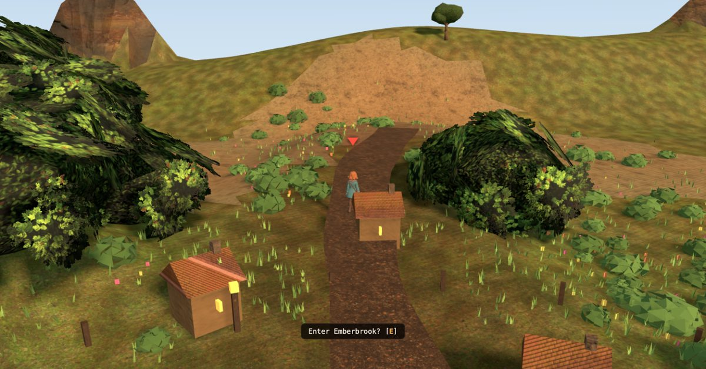<figcaption>gate &middot; boom 16</figcaption></figure>
 <figure class="pane">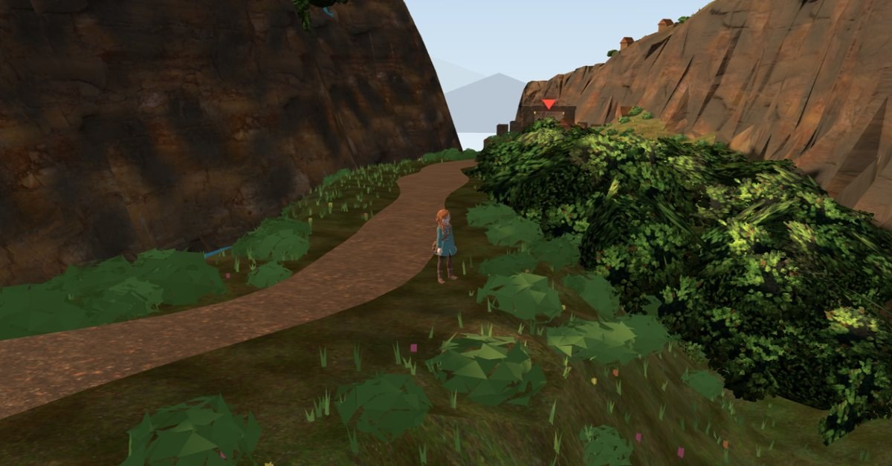<figcaption>shelf &middot; boom 12</figcaption></figure>
 <figure class="pane">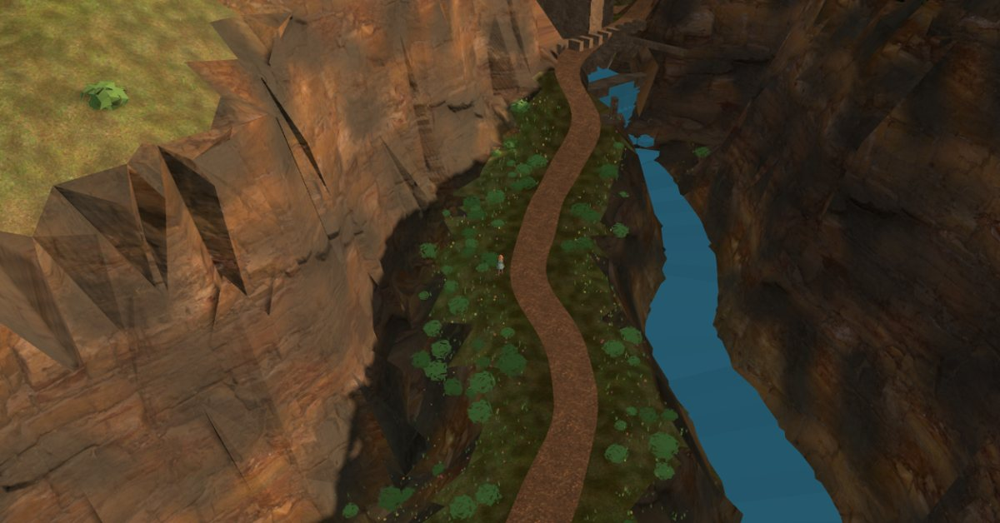<figcaption>shelf &middot; boom 40 (shipped)</figcaption></figure>
</div>
<div class="why"><b>What it costs.</b> ~69,000 triangles across 9 instanced batches, on top of a bundle that already
carries 38,740 triangles of meadow scatter it does not use near the road. Adoption is a <b>corridor stamp in
<code>tools/valley_veg.py</code></b>: the scatter machinery, the tuft/shrub vocabulary and the road&#8209;corridor
exclusion all exist &mdash; today the exclusion simply keeps everything <em>out</em> of the corridor, and this
inverts a band of it. No new material. Re&#8209;export <code>ow-valley</code>, re&#8209;run
<code>walk_bodygate</code> (scatter is non&#8209;collidable, but the walk network should be re&#8209;proved).
<b>Watch:</b> the flowers are the riskiest element &mdash; at 40&nbsp;m they are the pops&#8209;of&#8209;colour
pillar working, at 12&nbsp;m an over&#8209;hot magenta would read as litter. The scatter currently climbs the sand
plateau at the gate, which softens that hard paint&#8209;line edge; if you dislike it, it is one zone filter.</div>

<h3>A2 &mdash; TRODDEN WAY <span class="tag">someone maintains this road</span></h3>
<p class="desc">The ground stays bare on purpose. The <em>road</em> becomes a made thing: a stone verge scattered where the
ribbon meets grass, a lamp&#8209;topped waymarker every ~24&nbsp;m, and one wayside cairn at the corridor's midpoint. The
emptiness stops reading as unfinished and starts reading as wilderness with a road through it.</p>
<div class="row w3">
 <figure class="pane">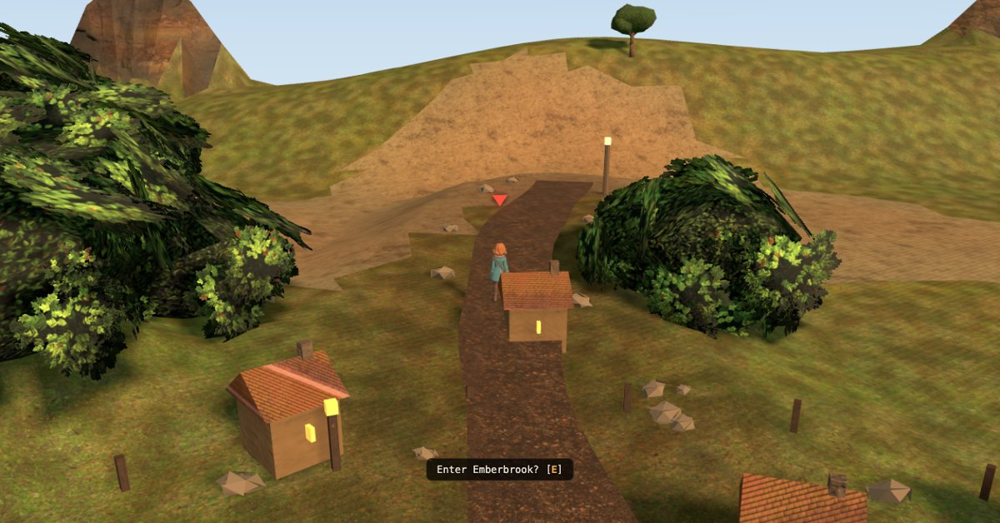<figcaption>gate &middot; boom 16</figcaption></figure>
 <figure class="pane">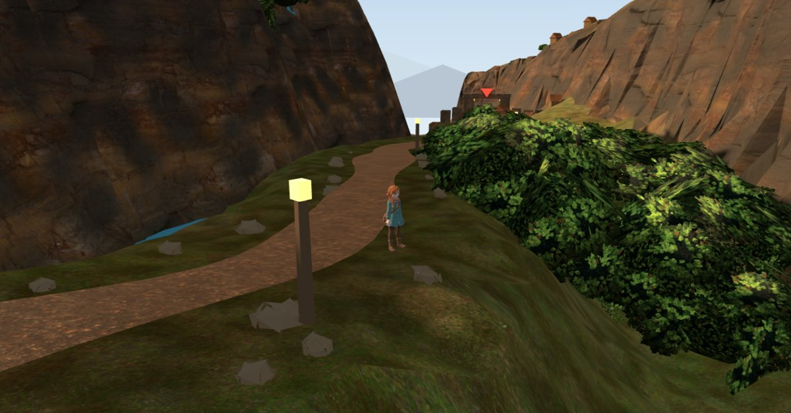<figcaption>shelf &middot; boom 12</figcaption></figure>
 <figure class="pane"><figcaption>shelf &middot; boom 40 (shipped)</figcaption></figure>
</div>
<div class="why"><b>What it costs.</b> <b>~4,000 triangles</b> &mdash; a seventeenth of A1, by far the cheapest of the three.
Adoption is a <b>road&#8209;edge pass keyed off the road polyline already in <code>tools/valley_map.py</code></b>; the
waymarker is a post plus an emissive head and would want a real lamp asset rather than the cube stand&#8209;in shown here.
<b>The one thing it buys that the others do not:</b> a walking rhythm. Lamps at a fixed interval tell the player how far
they have come, and the cairn gives the corridor one nameable place. <b>Watch:</b> lamps at night are a lighting decision,
and the light lane is closed.
<br><br><b>Cart ruts were in this candidate and were cut, after four measured rounds.</b> Making two ruts follow the road
needs the road's local heading, and the bundle only offers a 1.25&nbsp;m zone raster of road <em>cells</em>:
(1)&nbsp;finite differences on the cell list laid every rut due east &mdash; the list is in RLE scan order, not path order;
(2)&nbsp;a longest&#8209;road&#8209;run ray walk returned 140/100/0/150&deg; where PCA of the same neighbourhood returned
&minus;29/&minus;47/&minus;26/&minus;26&deg; and the corridor's own bearing is &minus;45&deg; &mdash; the road is ~4&nbsp;m
wide, so a 7.8&nbsp;m ray leaves it in every direction and the score is noise; (3)&nbsp;PCA over 9&nbsp;m then 18&nbsp;m with
an anisotropy floor was right mid&#8209;corridor and still crosswise at the town gate; (4)&nbsp;PCA cross&#8209;checked
against the zone grid and flipped on disagreement fixed the frame near the body and not the foreground. A rut is a claim
about direction, and none of the four could make it reliably. <b>In production a rut is not geometry anyway</b> &mdash; it is
a vertex&#8209;colour darkening of the road mesh, authored where the road POLYLINE lives, which knows its heading exactly
and needs none of this. Cut so the plate carries no bug your eye has to forgive.</div>

<h3>A3 &mdash; ROCK &amp; SCREE <span class="tag">the corridor is a gorge</span></h3>
<p class="desc">Dress with terrain rather than with plants: boulders fallen from the wall, a talus fan of chips at the wall foot,
and half&#8209;buried shelves breaking the grass so the meadow reads as thin soil over rock. Placement is driven by proximity
to a <code>crag</code> zone cell, so the dressing follows the geology rather than the road.</p>
<div class="row w3">
 <figure class="pane">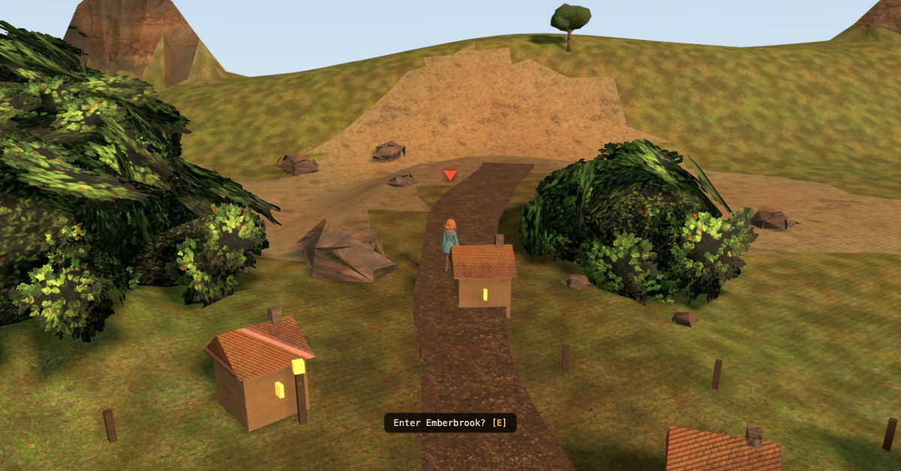<figcaption>gate &middot; boom 16</figcaption></figure>
 <figure class="pane">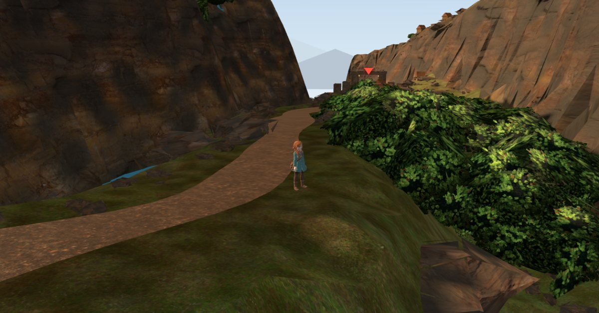<figcaption>shelf &middot; boom 12</figcaption></figure>
 <figure class="pane">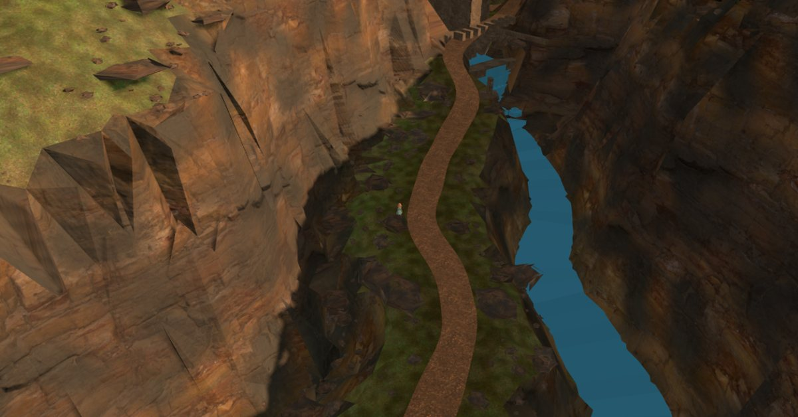<figcaption>shelf &middot; boom 40 (shipped)</figcaption></figure>
</div>
<div class="why"><b>What it costs.</b> ~34,000 triangles. Adoption reuses the crag treatment already in
<code>overworld3_lib</code>, and &mdash; the part that matters &mdash; <b>no new material at all</b>: every rock here
wears a clone of the shipped <code>ow_f2_ter_rock</code>, tinted near white so the crag's own map carries the hue.
<b>It is the only one of the three that attacks weakness&nbsp;2 directly:</b> the hard grass&#8594;rock paint line gets a
talus apron and stops being a vector edge. <b>Watch:</b> it is the most restrained of the three &mdash; if the complaint is
&ldquo;empty&rdquo; rather than &ldquo;flat&rdquo;, A1 answers it harder. Three rounds of flat&#8209;colour rock read as pale
concrete beside the textured crag before the borrowed material fixed it; a production pass should borrow the same way.</div>

<div class="why"><b>They compose.</b> A1 and A2 are not exclusive &mdash; plants and road furniture occupy different
space, and A3's talus sits where neither does. If you want a combination rather than a winner, say which two.</div>

<h2 class="sec">Section B &mdash; the water <span style="font:13px ui-monospace,Menlo,monospace;color:var(--dim)">(weakest item 3)</span></h2>
<p class="desc">All three are recipes on the single shipped material <code>ow_f2_water</code>. B3 adds one strip of geometry.
Every one of them is a handful of lines and every one is reversible in a commit.</p>

<div class="row">
 <figure class="pane is-before"><figcaption>B0 BEFORE &middot; gorge &middot; opaque, roughness 0.28</figcaption></figure>
 <figure class="pane">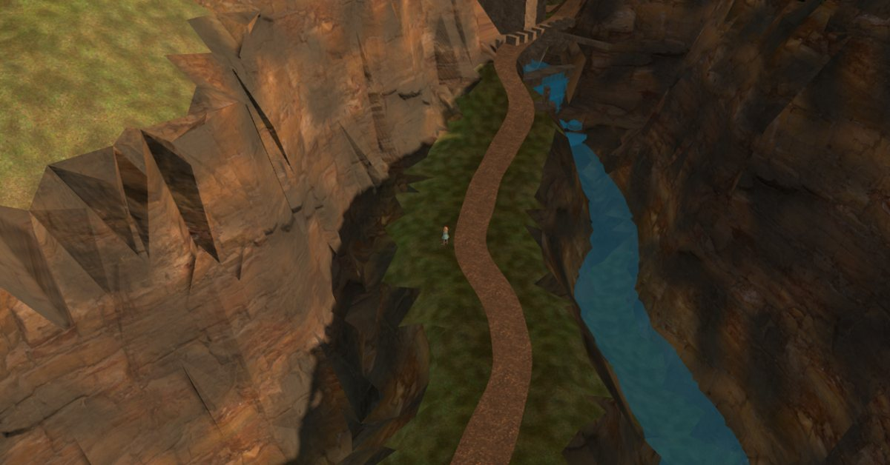<figcaption>B1 GLASS RIVER &middot; gorge</figcaption></figure>
 <figure class="pane">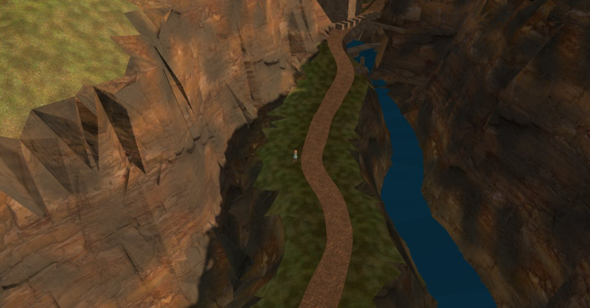<figcaption>B2 SKY MIRROR &middot; gorge</figcaption></figure>
 <figure class="pane">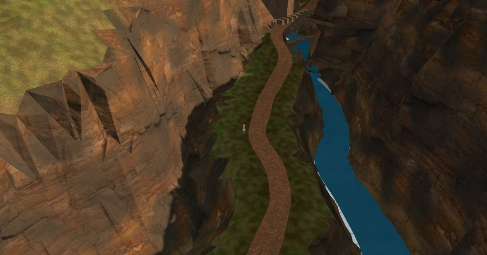<figcaption>B3 WATERLINE &middot; gorge</figcaption></figure>
</div>
<div class="row">
 <figure class="pane is-before"><figcaption>B0 BEFORE &middot; Dellhollow approach</figcaption></figure>
 <figure class="pane">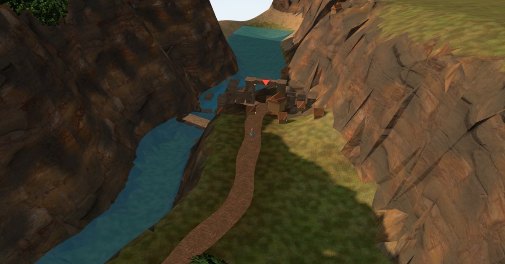<figcaption>B1 GLASS RIVER &middot; Dellhollow approach</figcaption></figure>
 <figure class="pane">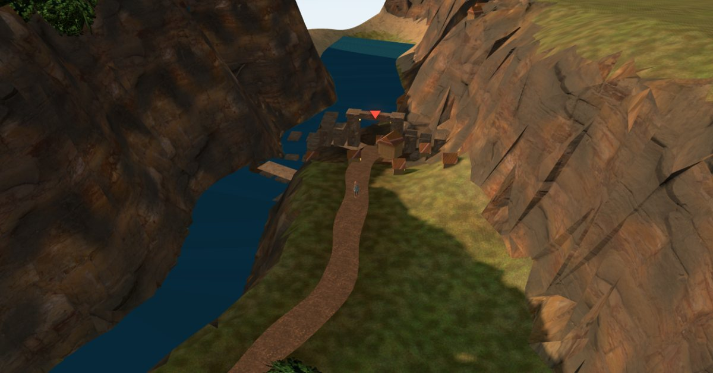<figcaption>B2 SKY MIRROR &middot; Dellhollow approach</figcaption></figure>
 <figure class="pane">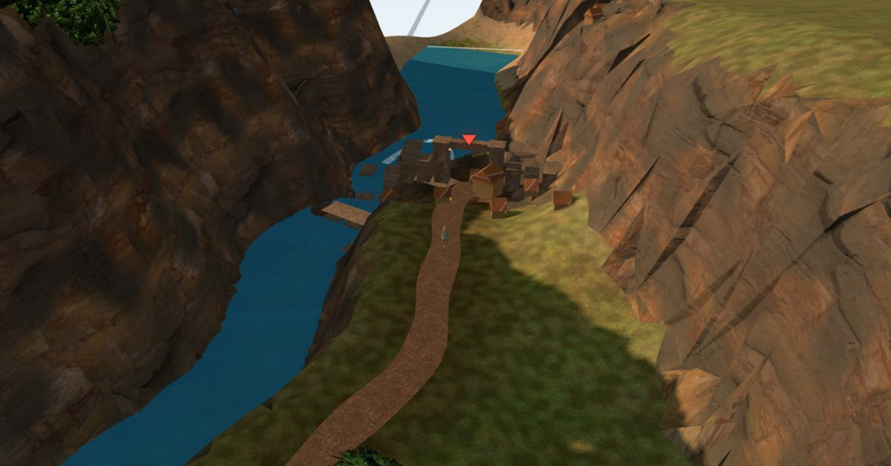<figcaption>B3 WATERLINE &middot; Dellhollow approach</figcaption></figure>
</div>

<table class="sum">
<tr><th>option</th><th>recipe</th><th>what it does to the frame</th><th>cost to adopt</th></tr>
<tr><td><b>B1 glass river</b></td>
    <td>opacity&nbsp;0.62, roughness&nbsp;0.06, depthWrite&nbsp;off, tint&nbsp;#bfe6ee</td>
    <td>The riverbed's rock modelling shows through; the surface picks up tonal ripple and the edge against rock softens.
        It stops being a plate and starts being a volume.</td>
    <td class="n">4 material properties.<br>Matches the ratified<br><code>water-transparency.md</code> pillar.</td></tr>
<tr><td><b>B2 sky mirror</b></td>
    <td>opaque, roughness&nbsp;0.02, metalness&nbsp;0.55, tint&nbsp;#8fb9c9</td>
    <td>Deep ink&#8209;blue in shadow, bright where the sky reaches it &mdash; a stylised, moody river with a big value
        drop that reads as depth. Loses all bed detail.</td>
    <td class="n">4 material properties.<br>Wants an env map<br>to pay off fully.</td></tr>
<tr><td><b>B3 waterline</b></td>
    <td>a pale 1.1&nbsp;m strip built on the water mesh's own boundary edges, plus a light transparency</td>
    <td>The river gains an <em>edge</em>. Where it runs against the gorge wall you get a shoreline instead of a
        straight cut.</td>
    <td class="n">695 shore edges &rarr;<br>~1,400 triangles,<br>generated at build time.</td></tr>
</table>

<div class="why"><b>Two water ideas were measured away before B3, and both are recorded because a number killed them, not taste.</b>
<br>(1) <em>Grade by depth</em> &mdash; surface&nbsp;y minus the bed under it. <code>SIM.floors</code> answers with WALK
floors and the riverbed is not collidable, so 4,467 of 4,548 vertices measured zero depth and the river came out one flat
pale cyan, worse than shipped.<br>(2) <em>Grade by distance to shore</em> &mdash; the shore is real (695 welded boundary
vertices, once the mesh is welded; it is unindexed, so the first pass called all 4,548 vertices &ldquo;shore&rdquo;), but
<code>water_river</code> is <b>336 triangles over ~180&nbsp;m</b>: the triangles are wider than the river, so no interior
vertex is far enough from a bank for any ramp to develop. Tightening the ramp to 3.5&nbsp;m changed nothing visible.
<b>Per&#8209;vertex colour cannot work on this mesh at its current tessellation</b> &mdash; if a depth gradient is wanted,
the river has to be subdivided first, and that is a separate decision.</div>

<h2 class="sec">How these were made, and what is <em>not</em> claimed</h2>
<p class="note">Every plate is a real frame from the shipped runtime at <code>?scene=ow-valley&amp;rt=1&amp;owlight=1</code>,
under last night's sun rig, captured over CDP. Blender was deliberately <em>not</em> used: <code>ow-valley</code> renders
in real time, so a Blender still would be a picture of a different lighting model. Candidates were injected into the live
scene graph by <code>tools/ow_probe/candidates.js</code> through <code>tools/ow_probe/ow_multi.mjs</code> (one
Chrome launch, 26 frames &mdash; Chrome, not the GPU, was the contended resource). <b>The shipped bundle, the map files and
<code>play3d.html</code> were not modified.</b></p>
<p class="note"><b>What these previews are not.</b> They are directions at production density, not production assets. The
tufts, shrubs, boulders and lamp heads are primitive stand&#8209;ins; judge the <em>density, the scale against the
1.7&nbsp;m body, and the placement rule</em>, not the modelling. Weakness&nbsp;4 (treeline silhouette) and weakness&nbsp;5
(town thresholds and cottage scale) have <b>no candidates built</b> &mdash; they are ranked and reported only, because two
sections is what one probe can put in front of you honestly.</p>
</main>
